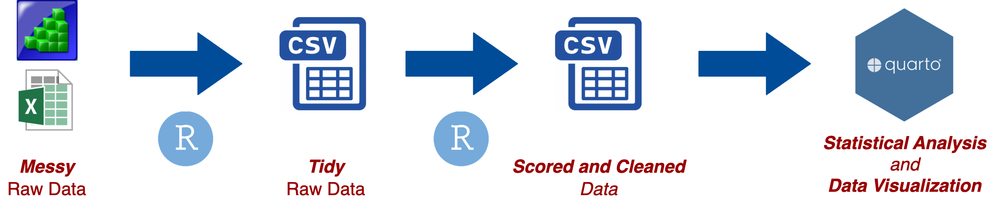

Appendix A — Reproducible Workflow
While it may be tempting to jump right into working with data and conducting analyses, it’s crucial to consider how you organize your projects, files, and data. This is especially important when working with data in R and creating fully reproducible workflows.
Part of the scientific process involves carefully documenting every step in our procedures. Doing so not only ensures higher quality research, but also enables your future self and others to fully reproduce what you did, go back and analyze the data in a different way, or catch errors in the data analysis process. Without a fully reproducible project, it may be difficult or impossible to catch errors that were made.
Workflow
The typical data analysis workflow looks something like this:
The first step in working with raw data files is to prepare the data so that it is usable and easy to understand. This often involves cleaning up the messy raw data and transforming it into a tidy format.
The next step is to aggregate the data across responses (e.g., accuracy, RT) and clean the data to create a scored and cleaned data file (this step may only be needed if there are multiple tasks / measures - such as in correlational research).
Then a single merged data file needs to be created that is ready for statistical analysis (this step may only be needed if there are multiple tasks / measures - such as in correlational research).
Finally, we can move on to the fun part of generating reports of statistical analyses and data visualization.
The first three steps can be accomplished using R scripts. The general process is to import the raw data file, transform the data (e.g., tidy the data or aggregate responses), and save the transformed data as an output file.
The fourth step is best done using Quarto documents. This allows for easy rendering and sharing of the results.
What does reproducibility mean?
Reproducibility in data processing and analysis means that all processing and analysis steps can be fully replicated using only the original raw data files and the execution of the R (or other program) scripts. There are different levels of reproducibility:
Partially reproducible - only some data processing and analysis steps can be reproduced, which may be due to a lack of original raw data files or the use of non-reproducible software.
Minimal level of reproducibility (acceptable) - full reproduction of data processing and analysis steps on your computer (or a lab computer) without any modifications needed.
Moderately reproducible (desired) - meets the minimal level plus other people not involved in the research project can reproduce the steps with minimal modifications.
Highly reproducible (good luck!) - full reproduction of steps without modification needed by people not involved in the research project 5 - 10+ years from now.
Note that these levels are arbitrarily defined by myself and what I came up with on the spot. A minimal level of reproducibility is still acceptable, as achieving more requires significant time and effort. Though, we should strive for a moderate amount of reproducibility, and achieving it requires more than just writing code. Your code must be organized, easy to understand, and include notes and documentation. Even if you or someone else attempts to reproduce your steps in the future, they can modify the code to make it work. The highest level of reproducibility is difficult to achieve due to software and code updates. Your code may only work with the current version of R or other packages. There are solutions to this problem of software and code updates, but who knows if those will work in the future!
Simply using R for data analysis does not guarantee that your workflow is reproducible. In fact, there are many non-reproducible ways to use R. To ensure at least a moderate level of reproducibility, consider the following criteria (this is not an exhaustive list):
Your statistical analysis (the final step) can be fully reproduced from the raw data files and R scripts
Your code can be reproduced on other computers without any modifications
Your data and R scripts are organized and documented in a way that makes them easily understandable to unfamiliar parties
This last criterion is extremely important, but is often overlooked. Simply posting your data and scripts to an open access repository like Open Science Framework (OSF.io) is not enough to guarantee reproducibility. If others cannot understand your workflow, then it is not reproducible. Therefore, it is crucial to take the time to think about the organization of your project, files, data, and scripts.
File Organization
Good project organization starts with easy to understand folder and file organization. For a data analysis project, the following folders are typically needed to meet at least a minimal level of reproducibility (the scored folder may or may not be needed):

Notice how the structure of the data folder follows the data analysis workflow. The original messy raw data files are stored in data / raw / messy. The tidy raw data files are stored in data / raw. And the scored and cleaned data files are stored in data / scored (only if score step is needed)

This organizational structure makes it easy to understand how the various R Scripts, stored in the R folder, correspond to each step in the data analysis workflow, what data the script is importing and where it is coming from, and what data file the script is outputting and saving to.
To help with this even further, I typically follow a particular file naming scheme.
I like to keep the original data file name for the messy raw data file.
For tidy raw data files I use taskname_raw.csv
For scored data files I use taskname_scored.csv
-
For R Scripts I will append a prefix number corresponding to the order in which the scripts need to be ran and a suffix corresponding to what stage of the data analysis workflow it is in:
1_taskname_raw.R
2_taskname_score.R
3_merge_scores.R
It could be tempting to just throw all your R code into one script or Quarto document, however, I advise against that because it will make it more difficult to manage, reproduce, and understand your data processing workflow.
RProjects and here()
You need to be using RStudio Projects for anything you do in R.
In fact, you should be opening RStudio by opening an RProject file.
RStudio Projects allow you to open isolated instances of R and RStudio for each of your projects. In combination with the here package it will also provide a simple and fool proof way of specifying file paths.
File Paths
A file path is what points to a specific file (or folder) on a computer and might look something like
On Macs:
Users/jtsukahara3/projects/project_name/a_file.txt
On Windows:
C:\jtsukahara3\projects\project_name\a_file.txt
These are known as absolute file paths because they start from a user or drive (C:) directory that is specific to that computer. Absolute file paths should absolutely be avoided in order to meet moderate levels of reproducibility.
Relative file paths on the other hand, start from a folder - typically a project folder
project_name/a_file.txt
Relative file paths need to be used in order for your project to meet moderate levels of reproducibility. A relative file path can be used on different computers as long as the internal organization of folders and files for the project are the same.
setwd() {#sec-setwd(}
The problem with relative file paths is that R still needs to work with files on a local computer and therefore needs to know the absolute file path to the project folder.
The standard way to do this is using setwd()to set the working directory (you can also set the working directory using the GUI in RStudio). The working directory tells R where the project folder is located and to set the working directory there. What this does is allow you then to only use relative file paths in your R scripts.
setwd("Users/jtsukahara3/projects/project_name")But, setting the working directory requires using an absolute file path! This means that any script where setwd() is used, the absolute file path in setwd() would need to be changed any time the script is ran on a different computer.
This breaks the requirement for a moderate level of reproducibility and, therefore, should be avoided.
here() {#sec-here(}
This is where here() comes in handy.
here() works in conjunction with RStudio Projects and requires an .Rproj file that is created when an RStudio Project is created. When you load the here package with library(here) it will search for the .Rproj file and start file paths at that point whenever the here() function is used.
For instance, I have an .Rproj file saved in my “useRguide” folder. When I use here(), the function will start at a file path to that location.
Therefore, the absolute file path to the project folder is set by library(here) without the user having to write an absolute file path in their script. This means they only have to write relative file paths and, therefore, meets the moderate level of reproducibility.
Every time you use here() you know that the file path will start at where you have your .Rproj file saved. Instead of messing around with working directories using setwd() or getwd(), just use here() and RStudio Projects. This becomes especially helpful when working with Quarto documents.
Relative file paths can be specificed inside of here()
here("data/raw/flanker_raw.csv")
## [1] "/Users/jtsukahara3/GitHub Repos/useRguide/data/raw/flanker_raw.csv"This is equivalent to
here("data", "raw", "flanker_raw.csv")
## [1] "/Users/jtsukahara3/GitHub Repos/useRguide/data/raw/flanker_raw.csv"I typically like to set the first argument as the folder path and the second argument as the file name. This visually separates the folder path and the file name, making your script easier to read.
here("data/raw", "flanker_raw.csv")
## [1] "/Users/jtsukahara3/GitHub Repos/useRguide/data/raw/flanker_raw.csv"You can then use here() directly in import and output functions:
import <- read_csv(here("data/raw", "flanker_raw.csv"))write_csv(data, here("data/scored", "flanker_scored.csv"))mainscript file
When you break up your data processing stages into separate R scripts, this can lead to having a lot of R scripts to source. It can be tedious to open each script, source it, then repeat for every R script while making sure you are doing everything in the right order.
Instead, I prefer to create a mainscript.Rmd file that uses source() to source each R script file in a particular order, and render_quarto() to render Quarto documents.
Using a Quarto (.qmd) document for the mainscript file is useful if you want to add in documentation about the study and data analysis workflow. For instance, you can add brief descriptions of how outliers were detected and dealt with, how reliability was calculated, etc.
It also makes it easier for yourself, your future self, or someone else to look at your mainscript.qmd file and easily understand your data processing workflow without having to go through each of your R scripts line-by-line.
Use Templates!
Don’t start from scratch, like ever.
It can be a ton of work, and mental effort, to create an efficient and reproducible project organization from scratch. Generally, I would try to avoid starting a project from blank, empty, R scripts. More than likely what will happen is that any organization you had thought of just breaks down because you are struggling enough with writing the R code itself, and you need to get a report on the data to your adviser so you decide to use shortcuts “for now”. But we all know that “for now” always turns into forever.
Unfortunately, not starting from scratch usually means that you have already setup an organization system with R script templates that you can use. This is likely not the case. So what to do?
Check out my Appendix B package that allows you to automatically setup the organizational structure I have outlined in this chapter, along with R script templates for each data processing stage.